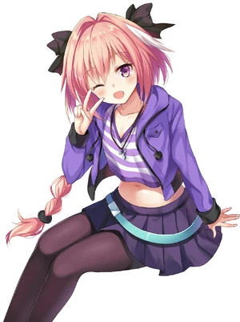
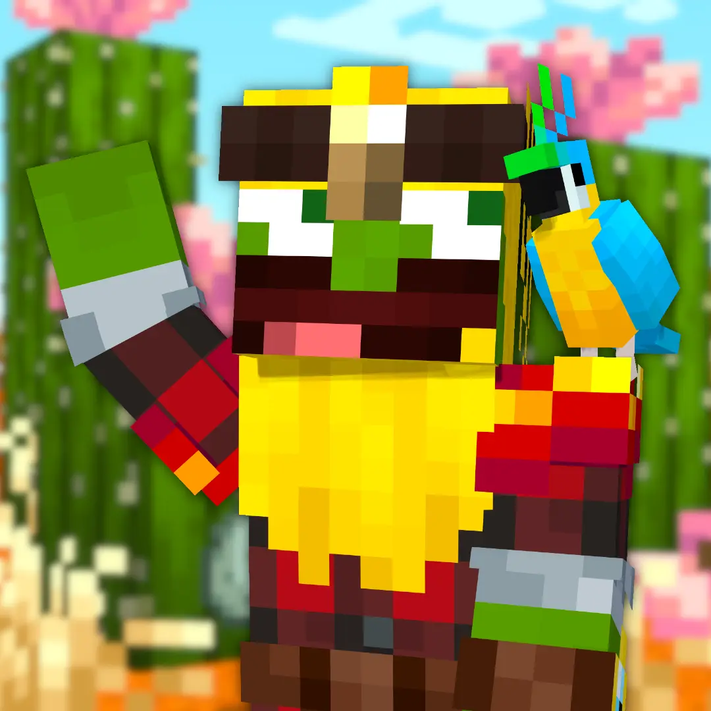
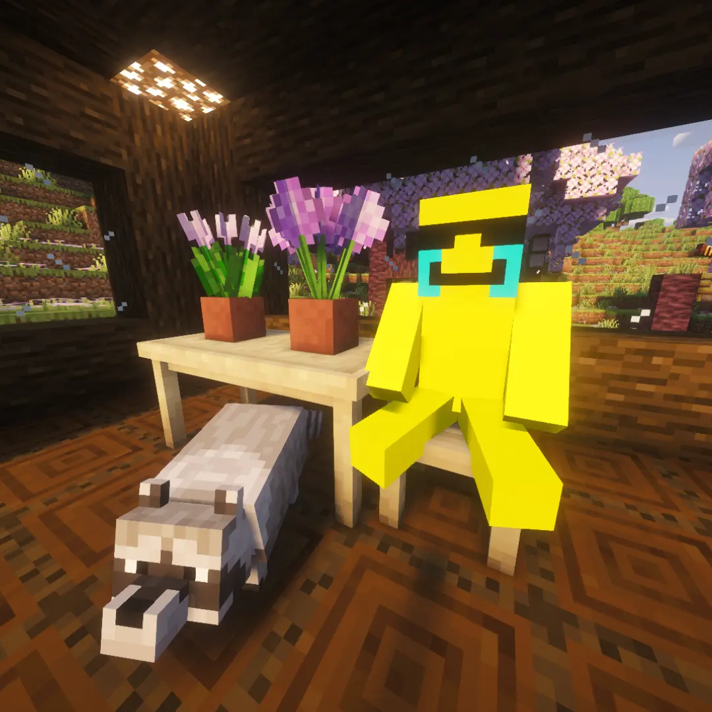

Cześć, jestem zuzjak
Piszę, redaguję i tłumaczę teksty, koduję boty, a wolny czas marnuję na gry i social media.
Zobacz moje projektyO mnie
Mam na imię Zuzia i mam 21 lat. Zajmuję się pisaniem, redagowaniem oraz tłumaczeniem polski↔angielski. Najlepiej odnajduję się w projektach, które trafiają w mój klimat i zainteresowania - wtedy praca przestaje być nudną rutyną.
Amatorsko programuję i próbuję swoich sił na różnych płaszczyznach, a efektem tych eksperymentów są moje boty na Discordzie oraz strony internetowe.
Staram się łączyć mój wybuchowy temperament z dbałością o detale, przekuwając nadmiar energii w dopieszczanie projektów do ostatniej linijki.
Moje projekty

Bot Żeńchłopiec
Strona projektu:
https://żeńchłopiecbot.pl
Kliknij, żeby poznać szczegóły
Współprace

Jurajski Staś
Od marca 2025 roku współpracuję z Jurajskim Stasiem - twórcą Minecraftowych treści na YouTube. Choć zaczynało się od redagowania scenariuszy, dziś skupiam się na wspieraniu jego społeczności jako administratorka serwera Discord oraz moderatorka transmisji na żywo.
Moim głównym zajęciem jest konserwacja Dinozaur Bota, którego zaprojektowałam we współpracy z ekipą i wciąż rozwijam, by ułatwiał nam codzienną moderację. Z mojej inicjatywy powstało Zuzdle, które pojawia się sporadycznie w formie tymczasowego eventu. Obecnie dbam o techniczną stronę serwera i czuwam nad atmosferą wśród widzów.
Link do kanału:
youtube.com/@JurajskiStas

szefastian
Od stycznia 2026 roku współpracuję z szefastianem - twórcą treści na YouTube. Zaprojektowałam od podstaw Żeńchłopiec Bota oraz dedykowaną mu stronę internetową, aktualnie dbając o ich stały rozwój i wprowadzanie nowych funkcji.
Na serwerze Discord pełnię rolę moderatorki, gdzie pilnuję porządku i aktywnie angażuję się w życie społeczności. Poza byciem techniczną opiekunką serwera, wspieram twórcę poprzez podsuwanie mu różnorakich pomysłów okołocontentowych, z których, jak sam twierdzi, jest "bardzo zadowolony :3".
Link do kanału:
youtube.com/@szefastian
Kontakt
Chcesz współpracować lub masz pytanie? Skontaktuj się ze mną!
- dlazuzjak@o2.pl
- zuzjak05